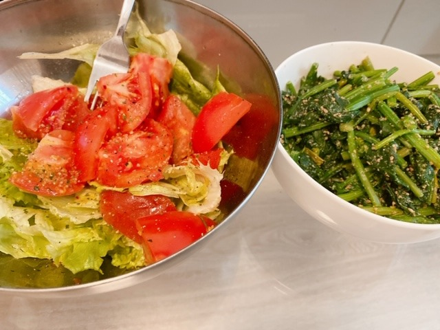

2020/0420Mon表情筋鍛えましょ
最近は
表情筋を鍛えています
むかつくなぁ
ちかいなぁ

実は白目にほくろがあるんですよ
知ってた方いるかな？
あ、もしかしたら
写真集にはたくさん写ってるかも
わ〜そう考えると
写真集発売、5月27日って
もうすぐやん
スタッフさんも
仕上げ作業に入ってくださっています
たくさんアイディアも言わせて
一緒に作り上げてきた自信作なので
みなさんに
はやく見てもらいたいです☺︎
御予約まだだよ〜という方はこちらから是非に
ポストカードも先着らしいです
ドキドキド
最近お肉ばかりむしゃむしゃ
食べていたので
今日から野菜中心の食事に変えようと思います

朝昼兼用ご飯はこちら
オリーブオイルドレッシングサラダに
小松菜和え
夜ご飯は
食べきれなかったサラダと小松菜プラス

ナスの煮浸し
おくら
ジャガイモとアスパラのガーリックバター
玄米
です☺︎
明日何作ろうかな
何がいいかな？
2020/04/20 18:30
コメント(393)
おぉ…笑
明日なぁ…なんだろなぁ
角煮とか ハンバーグも食べたいしなぁ
ポテトサラダも食べたいかなぁ
肉じゃがもいいよなぁ
明日なぁ…なんだろなぁ
角煮とか ハンバーグも食べたいしなぁ
ポテトサラダも食べたいかなぁ
肉じゃがもいいよなぁ
私は目のほくろがちょっとしたコンプレックスだったんですけど、未央奈ちゃんとまるっきり同じ場所にあって、突然大好きな所になりました（ ｉ _ ｉ ）！
人間的には当たり前に程遠いし恐れ多いけど幸せ。ありがとうございます♡♡
人間的には当たり前に程遠いし恐れ多いけど幸せ。ありがとうございます♡♡
ほんと美意識高い！！
ストイックな姿勢ほんと尊敬です。
写真集楽しみすぎる
ストイックな姿勢ほんと尊敬です。
写真集楽しみすぎる
未央奈、おはよう今日も愛してる 何食べたい 白目かほくろあるよねよ～くみるとわかるね またね～
みおなちゃん、大好きです
星占いによると今日は春野菜の天ぷらがいいらしいぞ
未央奈さんありがとうございます 。
写真集の発売がすごく楽しみです。
写真集の発売がすごく楽しみです。
私と一緒に、スイートポテトサラダ？！な
時間を過ごしてみませんか？！
時間を過ごしてみませんか？！
堀さんの料理は、センスが、あって、本当おいしそうですね、あと文芸社で、小説を募集してたので応募しました。そしたら、なんと、文芸社の方から、電話がかかってきました。僕の小説に、品のある知的な、女子大生が、でてくるのですが、堀さんがモデルで、名前を、絢音さんの名字と、堀さんの名前を合わせて、鈴木未央奈にしました。文芸社の方に鈴木未央奈のモデルは誰ですかと聞かれたので乃木坂46の堀未央奈さんと答えました。堀さんの文章センスはバツグンなので、堀さんも小説か、エッセイ、書かれたら、直木賞とれるはずです。
堀ペロみおな♪ヽ(´▽｀)/
未央奈ちゃん、こんばんは
アップの画像、可愛すぎてキュン死しそうになりました
そしてさりげなく写真集の告知
自然すぎて笑ってしまった
お料理の腕前もメキメキ上達やね
個人的には、野菜サラダとキーマカレーの組み合わせが好き
またお料理の写真お願いします
じゃぁ、またね
アップの画像、可愛すぎてキュン死しそうになりました
そしてさりげなく写真集の告知
自然すぎて笑ってしまった
お料理の腕前もメキメキ上達やね
個人的には、野菜サラダとキーマカレーの組み合わせが好き
またお料理の写真お願いします
じゃぁ、またね
ブログ更新ありがとうございます！
野菜中心の食生活、ヘルシーで体に良さそうですね✨
未央奈ちゃんは何の野菜が一番好きですか？私はきゅうりとトマトが好きです☺︎
素敵な1日を過ごせますように！
はなより
野菜中心の食生活、ヘルシーで体に良さそうですね✨
未央奈ちゃんは何の野菜が一番好きですか？私はきゅうりとトマトが好きです☺︎
素敵な1日を過ごせますように！
はなより
未央奈おはよう！
「むかつくなぁ」「ちかいなぁ」写真
ニヤニヤしながら見てます。
クセになる写真。
もうすぐ5月27日だね！
写真集も、ポストカードも楽しみすぎる。
この写真集が、みんなの癒しと希望になります様に。
料理美味しそー！
茄子のお浸し真似して作りました。（ピリ辛にしたけど）
今日は、何作るのかなー！
自分は、サバの味噌煮作ります！
SNSやブログでの未央奈発の情報楽しみしてたます。
先の見えないこの時期に、本当に癒しです。
ありがとうの気持ちでいっぱいです。
未央奈は未央奈のままで、
最高の笑顔を！
「むかつくなぁ」「ちかいなぁ」写真
ニヤニヤしながら見てます。
クセになる写真。
もうすぐ5月27日だね！
写真集も、ポストカードも楽しみすぎる。
この写真集が、みんなの癒しと希望になります様に。
料理美味しそー！
茄子のお浸し真似して作りました。（ピリ辛にしたけど）
今日は、何作るのかなー！
自分は、サバの味噌煮作ります！
SNSやブログでの未央奈発の情報楽しみしてたます。
先の見えないこの時期に、本当に癒しです。
ありがとうの気持ちでいっぱいです。
未央奈は未央奈のままで、
最高の笑顔を！
みおな
おはようございます
続けてコメントします
目にホクロあるの知らなかったです
俺は左目にあるから、共通点ですね
1枚目のヘラ出してる写真、最初に見たら明太子を口に咥えてると思ったらヘラだったから、勝手にツボりました笑（なんで明太子を口に咥えてるんだろうってヘラかみたいな笑）
写真集も後1ヶ月弱なので楽しみです
みおなは前回のサムギョプサルといい料理作るの上手いですね
しかも健康的な献立だし
みおなが作ったもあるけど、普通に美味しそうだから食べたくなります（普通にモテると思います）
今夜はハンバーグがいいな笑（俺が好きなだけだけど）
というわけで仕事行ってきます！
ありがとうございました
おはようございます
続けてコメントします
目にホクロあるの知らなかったです
俺は左目にあるから、共通点ですね
1枚目のヘラ出してる写真、最初に見たら明太子を口に咥えてると思ったらヘラだったから、勝手にツボりました笑（なんで明太子を口に咥えてるんだろうってヘラかみたいな笑）
写真集も後1ヶ月弱なので楽しみです
みおなは前回のサムギョプサルといい料理作るの上手いですね
しかも健康的な献立だし
みおなが作ったもあるけど、普通に美味しそうだから食べたくなります（普通にモテると思います）
今夜はハンバーグがいいな笑（俺が好きなだけだけど）
というわけで仕事行ってきます！
ありがとうございました
更新待ってました〜✨
コメントが遅くなりました…
未央奈ちゃんの作る
料理はいつもすごい美味しそう( ᷇࿀ ᷆ )
食べてみたいなぁ⸜( ॑꒳ ॑ )⸝
表情筋か…私も鍛えようかな
次の更新も待ってます✩.*˚
未央奈ちゃん大好きやお〜
コメントが遅くなりました…
未央奈ちゃんの作る
料理はいつもすごい美味しそう( ᷇࿀ ᷆ )
食べてみたいなぁ⸜( ॑꒳ ॑ )⸝
表情筋か…私も鍛えようかな
次の更新も待ってます✩.*˚
未央奈ちゃん大好きやお〜
アップしている写真普通にかわいい
写真集すごく楽しみ
発売が待ち遠しい
写真集すごく楽しみ
発売が待ち遠しい
ナス好きですっごい美味しそう(´﹃｀)
未央奈ちゃん更新ありがとう！
いかがお過ごしでしょうか？
写真集ほんと楽しみ！✴️
私も自炊してみようかな？
ではでは～
今日も素敵な１日を。
いかがお過ごしでしょうか？
写真集ほんと楽しみ！✴️
私も自炊してみようかな？
ではでは～
今日も素敵な１日を。
規則正しい生活おくれてますかぁー
更新ありがとうございます
目にホクロってできるんですね
知らなかったです
肌が綺麗で羨ましいです
近くても可愛いですね
未央奈さんは料理上手ですね
美味しそう
ヘルシーでいいですね
写真集楽しみです
早く見たいなぁ
待ち遠しいです
次の更新も楽しみにしています
お身体に気をつけて頑張ってください
未央奈さん大好きです
ではでは
目にホクロってできるんですね
知らなかったです
肌が綺麗で羨ましいです
近くても可愛いですね
未央奈さんは料理上手ですね
美味しそう
ヘルシーでいいですね
写真集楽しみです
早く見たいなぁ
待ち遠しいです
次の更新も楽しみにしています
お身体に気をつけて頑張ってください
未央奈さん大好きです
ではでは
かわいい❤️
目のほくろ初めて見ました
ブログ更新ありがとう！
相変わらず可愛いです！！休みが長くて生活習慣乱れがちだけど、、未央奈ちゃんは大丈夫ですか？
料理美味しそう〜！ヘルシーな内容になってますね！！
私はあんま動かないのに食べる量が変わらなくて休み明けが不安になってます、、
写真集の発売、近づいてきましたね。。絶対に良いものになっているのは分かってるけど、どんな未央奈ちゃんが見られるのか楽しみで仕方ありません！
ブログの更新が多くて嬉しいです！またTVとかで歌って踊ってる未央奈ちゃんが見られるのを楽しみにしてます！
そのためにも、この状況がより早くおさまることを願うばかりですね、、
相変わらず可愛いです！！休みが長くて生活習慣乱れがちだけど、、未央奈ちゃんは大丈夫ですか？
料理美味しそう〜！ヘルシーな内容になってますね！！
私はあんま動かないのに食べる量が変わらなくて休み明けが不安になってます、、
写真集の発売、近づいてきましたね。。絶対に良いものになっているのは分かってるけど、どんな未央奈ちゃんが見られるのか楽しみで仕方ありません！
ブログの更新が多くて嬉しいです！またTVとかで歌って踊ってる未央奈ちゃんが見られるのを楽しみにしてます！
そのためにも、この状況がより早くおさまることを願うばかりですね、、
まじで美味しそう。
ブログ更新ありがとう！コロナに一緒に立ち向かおう！
ブログ更新ありがとう！コロナに一緒に立ち向かおう！
未央奈ちゃん、更新ありがとうございます！
未央奈ちゃんのブログをいつも楽しみにしてます！また、更新待ってます！
大好きです。これからも応援してます。
未央奈ちゃんのブログをいつも楽しみにしてます！また、更新待ってます！
大好きです。これからも応援してます。
みおなちゃーん！
可愛い
一つ質問するね！
Q.1番尊敬している先輩は？
お願いします！
可愛い
一つ質問するね！
Q.1番尊敬している先輩は？
お願いします！
未央奈〜ブログ更新ありがとう〜！
いつも可愛い未央奈に癒されてる ♡
質問
◎語学勉強してるって言ってたけどテキストとか使ってる？
よかったら教えて欲しい‼︎‼︎
◎ナムジャの曲は聴かないの〜？
미오나 사랑해요
いつも可愛い未央奈に癒されてる ♡
質問
◎語学勉強してるって言ってたけどテキストとか使ってる？
よかったら教えて欲しい‼︎‼︎
◎ナムジャの曲は聴かないの〜？
미오나 사랑해요
未央奈ありがとう！！
オムライスとかカレー ！
大好きです。
オムライスとかカレー ！
大好きです。
未央奈、今日も愛してる
未央奈ちゃんおはよう。写真集発売待ち遠しいね。
白目のほくろ、気になったので調べてみた。
只のほくろなのかな？ならいいけど。
占いでは喜怒哀楽が激しく情に厚いのだそうだ。
夕ご飯、玄米いいねぇ。おかずもおいしそうだね。それ全部一人で食べたのかな？
白目のほくろ、気になったので調べてみた。
只のほくろなのかな？ならいいけど。
占いでは喜怒哀楽が激しく情に厚いのだそうだ。
夕ご飯、玄米いいねぇ。おかずもおいしそうだね。それ全部一人で食べたのかな？
未央奈がいるからこの環境を乗り越えられる！
マジで会いたい、
ブログ楽しみに待ってます！
写真集が待ち遠しいです
どんな未央奈が見られるのか楽しみにです！！
いつも未央奈に癒されています！
最後に一言…
未央奈を推してほんとに良かった！後悔なし
マジで会いたい、
ブログ楽しみに待ってます！
写真集が待ち遠しいです
どんな未央奈が見られるのか楽しみにです！！
いつも未央奈に癒されています！
最後に一言…
未央奈を推してほんとに良かった！後悔なし
未央奈ブログコメント15回目のかずきです！
野菜生活偉いね
家にいると動かなくなるし、人と話さなくなるから
意識して表情筋とか鍛えないとね！
あと改めて感じたけど未央奈料理上手すぎ
乃木坂でも結構上位の方かな？？
写真集まだ頼んでないので、早く頼みまーーす！
じゃ、またね〜！
体に気をつけて！
無理しないように！！！
ばいばーいい
野菜生活偉いね
家にいると動かなくなるし、人と話さなくなるから
意識して表情筋とか鍛えないとね！
あと改めて感じたけど未央奈料理上手すぎ
乃木坂でも結構上位の方かな？？
写真集まだ頼んでないので、早く頼みまーーす！
じゃ、またね〜！
体に気をつけて！
無理しないように！！！
ばいばーいい
未央奈ー
ブログ更新ありがとう
写真集予約しましたー
ブログ更新ありがとう
写真集予約しましたー
これから堀ちゃんLOVEという名前を使っていくので覚えてください！！
とても健康的な料理でいいですね！
家にいるのが辛いです。けど、これを守らなきゃ終わりません。だから、いつも、堀ちゃんのブログ更新を楽しみにしています！
堀ちゃんがいるから僕は乗り越えられそうです！堀ちゃんは僕の心の支えです！感謝。感謝。
ほくろ知りませんでしたー笑なので、写真集楽しみです！どんな堀ちゃんが見れるんでしょか。
待ち遠しいです！
ロック画面も、ホーム画面も、LINEのトプ画も、背景画も
ぜーーーーんぶ堀ちゃんに包まれていてしあわせです！
写真をあげて下さってありがとうございます！元気が出ます！勉強も頑張ろう！という気持ちになってきます！
また更新してください！写真待ってます。
堀ちゃんに出会えてよかったありがとう。常に感謝。堀ちゃんを推して後悔なし。永遠の推し。
岐阜県在住 高校2年 男子
とても健康的な料理でいいですね！
家にいるのが辛いです。けど、これを守らなきゃ終わりません。だから、いつも、堀ちゃんのブログ更新を楽しみにしています！
堀ちゃんがいるから僕は乗り越えられそうです！堀ちゃんは僕の心の支えです！感謝。感謝。
ほくろ知りませんでしたー笑なので、写真集楽しみです！どんな堀ちゃんが見れるんでしょか。
待ち遠しいです！
ロック画面も、ホーム画面も、LINEのトプ画も、背景画も
ぜーーーーんぶ堀ちゃんに包まれていてしあわせです！
写真をあげて下さってありがとうございます！元気が出ます！勉強も頑張ろう！という気持ちになってきます！
また更新してください！写真待ってます。
堀ちゃんに出会えてよかったありがとう。常に感謝。堀ちゃんを推して後悔なし。永遠の推し。
岐阜県在住 高校2年 男子
表情筋ゲーム
乃木坂メンバーで『芸人ドランクドラゴン考案』
アイラック木戸(フェイスメイクトレーニング)
鈴木拓、考案(フェイスメイクゲーム)
などで遊んでみてください。＼(^_^)／
乃木坂メンバーで『芸人ドランクドラゴン考案』
アイラック木戸(フェイスメイクトレーニング)
鈴木拓、考案(フェイスメイクゲーム)
などで遊んでみてください。＼(^_^)／
こーゆー期間にも努力してる未央奈素敵です！！
ブログ更新、ありがとうございます。
この前の私のコメント、間違えました。
あつ森の部屋にかかっていたペナント、島評価☆３つじゃなくて
ハッピーホームアカデミーポイント３００００点記念でした。
今回のブログはお料理の写真がおいしそうでした。
次も楽しみにしています。
では。
この前の私のコメント、間違えました。
あつ森の部屋にかかっていたペナント、島評価☆３つじゃなくて
ハッピーホームアカデミーポイント３００００点記念でした。
今回のブログはお料理の写真がおいしそうでした。
次も楽しみにしています。
では。
体がなまらないよう気をつけてね
明日何作ろうか迷ってるの？
料理の事は分からないけど明日も
ブログを作ってくれるとありがたいです！
それか表情筋…


料理の事は分からないけど明日も
ブログを作ってくれるとありがたいです！
それか表情筋…
ほりさんのおすすめで、昔々見た海がきこえるを振り返りたいになった。ジブリの作品で音楽も心に沁みます。
ちなみに、海がきこえるの中訳は海潮之聲。です。
次は明日昨日デート(タイトル長い、省略)もう一度観たいですね。これも随分前に見た作品。私はこういう神のいたずらのような切ない時空超え恋の設定に一番弱いです、泣きますね、一人でこっそり。
表情筋豊かなので、コメディにも役に立ちますね。
箸くんのみおなさんの表情思い出しました。笑。いろんなジャンルの作品みおなさんの姿観たい。
ちなみに、海がきこえるの中訳は海潮之聲。です。
次は明日昨日デート(タイトル長い、省略)もう一度観たいですね。これも随分前に見た作品。私はこういう神のいたずらのような切ない時空超え恋の設定に一番弱いです、泣きますね、一人でこっそり。
表情筋豊かなので、コメディにも役に立ちますね。
箸くんのみおなさんの表情思い出しました。笑。いろんなジャンルの作品みおなさんの姿観たい。
未央奈好き！
写真集買います
みおちゃんブログ更新ありがとう〜！表情筋鍛えるのいいね可愛いよ‼️
未央奈ちゃんありがとうございます！お疲れ様です。気をつけて下さい！楽しみにしてます！写真集楽しみにしてます‼頑張ります‼ありがとうございます！
こんにちはー！
コメント遅くなりました。寝落ちしちゃって起きて仕事で終わってからですので許してくださいw
表情筋！もともと結構表情豊かなイメージがあるよ?
そんな近くで実際に見たいわーむかつかない可愛いです( *・ω・)ノ
鍛えたら、寄り目や高速まばたきがさらにレベルアップしそうw
白目ほくろは気付かなかった！すごいね！
写真集で探さしていただきます(゜ー゜)(。_。)
ドキドキドはわざと？w
良いやんー
予約はこれから！でもする！
まさに、野菜生活だね！
肉も良いけどおもいっきり野菜中心てのもありだよね！
バリバリ、シャキシャキ、ポキポキ。。サラダ食べたくなってきた。
胡麻ドレが好きなんだけど、未央奈はお好みのやつとかある？
何だかんだお鍋って野菜たっぷり食べれるし、肉も魚も入れても良いから迷ったときの選択肢の１つで！
ブログ更新ありがとーね。
インスタは写真集中心になったけど、チェックしてるし755もモバメも見てまーす。
これからも配信お願いします☆
でわ！
コメント遅くなりました。寝落ちしちゃって起きて仕事で終わってからですので許してくださいw
表情筋！もともと結構表情豊かなイメージがあるよ?
そんな近くで実際に見たいわーむかつかない可愛いです( *・ω・)ノ
鍛えたら、寄り目や高速まばたきがさらにレベルアップしそうw
白目ほくろは気付かなかった！すごいね！
写真集で探さしていただきます(゜ー゜)(。_。)
ドキドキドはわざと？w
良いやんー
予約はこれから！でもする！
まさに、野菜生活だね！
肉も良いけどおもいっきり野菜中心てのもありだよね！
バリバリ、シャキシャキ、ポキポキ。。サラダ食べたくなってきた。
胡麻ドレが好きなんだけど、未央奈はお好みのやつとかある？
何だかんだお鍋って野菜たっぷり食べれるし、肉も魚も入れても良いから迷ったときの選択肢の１つで！
ブログ更新ありがとーね。
インスタは写真集中心になったけど、チェックしてるし755もモバメも見てまーす。
これからも配信お願いします☆
でわ！
みおなさんブログ更新ありがとうございます。
「むかつくなぁ」「ちかいなぁ」写真の撮り方のくせがつよいなぁ！
見ていてたのしかったです。
次作って欲しいのは
お寿司(にぎり寿司・ちらし寿司)です。
「むかつくなぁ」「ちかいなぁ」写真の撮り方のくせがつよいなぁ！
見ていてたのしかったです。
次作って欲しいのは
お寿司(にぎり寿司・ちらし寿司)です。
写真は勿論予約済みです(^^)/
大好きな未央奈ちゃんこんにちは!今日は何して過ごしていますか?食事は肉、魚、野菜などバランスよく食べないとね。わかっててもなかなか難しいよね!未央奈ちゃんと一緒に食事すると楽しいだろうなあ!料理のレパートリー増えるといいね!いつか、未央奈ちゃんに料理番組やってほしいなあ!ゲストにメンバーやＯＧ、バナナマンさんやオテキのりさん、同じ坂道メンバー。仲良しの芸能人。歌って踊れて、アクションもでき、料理まででき、映画のコメテンター、個性的な絵も描き、オリジナルのギャグもできる、今までにいないような女優さんやタレントになってほしいなあ。未央奈ちゃんなら必ずなれると思います。今から楽しみ!大好きやおー
堀ちゃんq(^-^q)こんにちは❗堀ちゃんのコミュニケーション能力が凄いと世間がざわざわ ざわめいていますよ‼
咲良ちゃんの森でカンちゃんが荒らして捕獲されたみたいだよ(ノ_＜。)
堀ちゃんには優しかったのにねぇ～
因みに堀ちゃんの〈最近〉って《直近》ってことかな❓ とりあえずプログに書いてあることは全部鵜呑みにしないでおきますね(。-∀-)
毎日、更新していただいてありがとう(*￣∇￣*)ございます＆お疲れ様です(*^▽^)/★*☆♪
咲良ちゃんの森でカンちゃんが荒らして捕獲されたみたいだよ(ノ_＜。)
堀ちゃんには優しかったのにねぇ～
因みに堀ちゃんの〈最近〉って《直近》ってことかな❓ とりあえずプログに書いてあることは全部鵜呑みにしないでおきますね(。-∀-)
毎日、更新していただいてありがとう(*￣∇￣*)ございます＆お疲れ様です(*^▽^)/★*☆♪


目にホクロってできるんですね…。
それにしても堀ちゃん料理上手ですね！
写真見ただけで凄く美味しそうに感じます！
明日はなに作るのかな！？